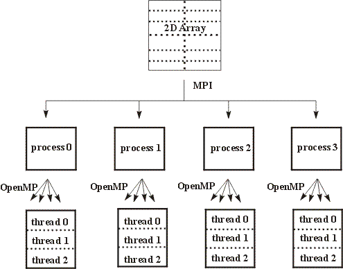

hyPACK-2013 Mode-1 : Mixed Mode of Programming MPI- OpenMP
MPI is a standard message-passing interface for applications and libraries
running on concurrent computers with logically distributed memory.
In message-passing model, the data is moved from the address space of one process to that of another
by means of a cooperative operation such as a send/receive pair.
Message-passing programs are often written using the asynchronous or loosely
synchronous paradigms.
The message passing-programming paradigm assumes a partitioned address space
and supports
explicit parallelization.
MPI-OpenMP
Listing of MPI-OpenMP codes
The OpenMP 3.X API is used for writing portable multithreaded applications, based on Fortran, C and C++ languages. The OpenMP programming model plays a key role by providing an easy method for threading applications without burdening the programmer with the complications of creating, synchronizing load balancing, and destroying threads. The OpenMP model provides a platform independent set of compiler pragmas, directives, function calls, and environment variables that explicitly instruct the compiler how and where to use the parallelism in the application.
Click here ...... to know more about
MPI-OpenMP/Codes
Mixed (hybrid) mode-programming models such as MPI-OpenMP, MPI-Pthreads, &
MPI-TBB are commonly used on Message Passing cluster of Multi-Core processors.
By utilizing the mixed(hybrid) mode-programming model (MPI-OpenMP) ,we should be able to take
advantage of the benefits of shared and non-shared memory models.
The majority of mixed mode applications involve a hierarchical model,
MPI parallelisation occurring at the top level, and OpenMP parallelisation occurring below.
MPI OpenMP
Message passing programs written in MPI are portable and should transfer easily to cluster of Multi-Core processor Systems.
Message passing is required to communicate between nodes (boxes) using different networks,and message passing
in node (Multi-core processors) require communication within node. Performance depends upon the
efficient implementation within a node.
OpenMP is an Application Program Interface (API) that may be used to explicitly direct multi-threaded, shared memory
parallelism. It is a specification for a set of compiler directives, library routines and environment variables
that can be used to specify shared memory parallelism in Fortran and C/C++ programs.
The OpenMP is a shared memory standard supported by most of the hardware and software vendors.
OpenMP is comprised of three primary API components such as Compiler Directives,
Runtime Library Routines, and Environment Variables
OpenMP is portable and the API is specified for C/C++ and Fortran.
Multiple platforms have been implemented including most Unix platforms and Windows NT. Efforts are going on
to implement on Multi-Core processors to enhance the performance. The available programming environment on most
of the Multi-Core processors will address the thread affinity to core and overheads in OpenMP programming environment.
A combination of shared memory and message
passing parallelisation paradigms within the same application (mixed mode programming) may provide a more efficient
parallelisation strategy than pure MPI.
While mixed code may involve other programming languages such as High Performance Fortran (HPF) and POSIX threads.
Mixed MPI and OpenMP codes are likely to represent the most widespread use of mixed mode programming on SMP
cluster due to their portability and the fact that they represent industry standards for distributed and shared
memory systems respectively.
While SMP clusters offer the greatest reason for developing mixed mode code, both the OpenMP and MPI paradigms
have different advantages and disadvantages and by developing such a model these characteristics might even be
exploited to give the best performance on a single SMP system.
Thread Safety in MPI-OpenMP :
Although a large number of MPI implementations are thread-safe, mixed mode programming cannot be
guaranteed. To ensure the code is portable all MPI calls should be made within thread sequential
regions of the code. This often creates little problem as the majority of codes involve the OpenMP
parallelisation occurring beneath the MPI parallelisation and hence the majority of MPI
calls occur outside the OpenMP parallel regions. When MPI calls occur within an
OpenMP parallel region,
the
calls should be placed inside a CRITICAL , MASTER or SINGLE REGION ,depending on the nature of the code.
Care should be taken with SINGLE regions, as different threads can execute the code.
Ideally the number of threads should be set from within each MPI process using
OMP_SET_NUM_THEREADS(n) as this is more portable than the OMP_NUM_THREADS environment
variable.
In mixed mode-programming model, the advantage of the benefits of MPI & OpenMP models can be taken in which, a mixed mode
program make use of the explicit control data placement policies of MPI with the finer grain parallelism of OpenMP.
The majority of mixed mode applications involve a hierarchical model, MPI parallelisation occurring at the top level,
and OpenMP parallelisation occurring below. For example, Figure 1 shows a two-dimensional grid, which has been
divided between four MPI processes.

Figure 1: Schematic representation of a hierarchical mixed mode progamming model for a two-dimensional grid array.
In figure 1, the sub-arrays have then been further divided between three OpenMP threads. This model closely maps to the
architecture of an SMP cluster,the MPI parallelisation occurring between the SMP boxes and the OpenMP parallelisation
within the boxes. Message passing could be used within a code when this is relatively simple to implement and
shared memory parallelism used where message passing is difficult. Most of the manufacturers provide extended
versions of their communication library for clusters of multiprocessors; existing MPI codes can be directly used
with a unified MPI model. The alternative is mixing MPI with a shared memory model such as OpenMP. In that case,
different possibilities exist, which must be compared according to the performance and programming effort tradeoff.
In the mixed mode programming concept, MPI should be thread safe. If MPI is not thread safe, the program which is having
non-blocking MPI library calls and OpenMP in certain order may give wrong results.
Special care is needed while
using specific MPI library calls in mixed mode programming with OpenMP to avoid race conditions or to get correct results.
(A) Fine-grain parallelisation :
From an existing MPI code, the simplest approach is the incremental one:
It consists of OpenMP parallelisation of the loop nests in the computation part of the MPI code.
This approach is also called OpenMP fine-grain or loop level parallelisation.
Several options can be used according to
- The programming effort
- The choice of the loop nests to parallelise
Several levels of programming effort are required. First possibility consists in parallelising loop nests
in the computation part of the MPI code without any manual optimization. Only the correctness of the parallel
version versus the sequential version semantic is checked. But the incremental approach can be
significantly improved by applying several manual optimizations (loop permutation, loop exchange,use of
temporary variables). These optimizations are required
Another issue is the choice of the loop nests to parallelise. One option is to parallelise all loop nests.
The alternative option consists in selecting by profiling the loop nests that contribute significantly
to the global execution time.
(B) Coarse-grain parallelisation :
Instead of applying a two level parallelisation (process level and loop level), another currently
investigated approach is the coarse-grain OpenMP SPMD parallelisation. In this approach, OpenMP
is still used to take advantage of the shared memory inside the SMP nodes or Multi-Core Processors but a SPMD
programming style is used instead of the traditional shared memory multi-thread approach.
In this mode, OpenMP is used to spawn N threads in the main program, having each thread act similarly to
a MPI process.
The OpenMP PARALLEL directive is used at the outermost level of the program. The principle is to spawn
the threads just after the spawn of the MPI processes (some initializations may separate the two spawns). As
for the message passing SPMD approach, the programmer must take care of several issues:
- Array distribution among threads
- Work distribution among threads
- Coordination between threads
Since the array distribution is done assuming a shared memory, the distribution of the array only concerns
the attribution of different array regions to the different running threads.
For maximum performance, these regions should not overlap for write references.
The work distribution is made according to the array distribution. Typically, the OpenMP DO directive
is not used for distributing the loop iterations among threads. Instead, the programmer
inserts some calculations of the loop boundaries that depend on the thread number.
Co-ordinating the threads involves managing critical sections (I/O, MPI calls) using either OpenMP
directives like MASTER or thread library calls like OMP_GET_THREAD_NUM() to guard
conditional statements.
On Multi-Core processors, the implementation of MPI and OpenMP give insight into the estimation of overheads
and the use of OpenMP may alleviate some of the overheads from data movement, false sharing, and contention.
The overheads associated with automated generation of threaded code from directives have been shown
minimal in the context of variety of applications on dual/quad core processors.
A programmer must weigh all above considerations before deciding on an API (MPI & OpenMP) for programming
and performance point of view.

List of Programs based on MPI-OpenMP
-
Programs to illustrate basic MPI point-to-point library calls & OpenMP PARALLEL For Directive;
-
MPI-OpenMP programs (MPI Collective Communication and Computation Library Calls & OpenMP PARALLEL For
Directive and CRITICAL section)
to compute the value of pie function by numerical integration of
a function f(X) = 4/(1+x2) between the limits 0 and 1;
-
MPI-OpenMP program to compute the Infinity norm of a matrix using block striped
partitioning with row wise data distribution based on MPI Collective Communication and OpenMP Parallel
For Directive and PRIVATE, SHARED Clauses;
-
MPI-OpenMP program to compute the Matrix-Vector Multiplication
using self scheduling algorithm based on MPI Collective Communication and OpenMP Parallel
For Directive
and PRIVATE, SHARED Clauses.
MPI-OpenMP program to compute the matrix into Matrix Multiplication
using Checker-board Partititoning of matrices.
MPI-OpenMP3.0 program to compute the Matrix into Vector Multiplication
using block striped partitioning of matrices.
-
MPI-openmp program to solve a system of linear equations AX=B using Conjugate Gradient Method.
|
|